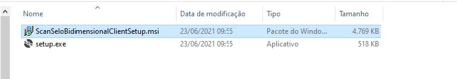

INSTALAÇÃO APLICAÇÃO DE PROCESSAMENTO DOS SELOS
Backup selos não processados
Antes de qualquer instalação será necessário fazer um backup da pasta onde estão os selos coletados que ainda não foram processados e enviados para o servidor.
Navegue até a pasta onde está instalado o programa “ScanSeloBidimensionalClient.exe”, essa pasta por padrão está localizada no endereço
“C:\ScanSeloBidimensionalServer”.
Localize a pasta “Selos”, clique com o botão direito sobre a pasta para abrir o menu suspenso de opções, em seguida selecione a opção “Copiar”.
Navegue até uma pasta de sua preferência, clique com o botão direito na tela e escolha a opção “Colar”
Desistalar aplicação desatualizada
Após o backup da pasta de selos não processados, será necessário desinstalar a aplicação antiga para que não tenha nenhum interferência no funcionamento da nova aplicação Scan Selo Bidimensional.
Acesse o “Painel de Controle”, utilize as teclas “Windows + R” para abrir a caixa de comandos e digete “control panel” e tecle ENTER

No painel de controle encontre a opção “Desinstalar um programa”, em seguida encontre a aplicação ScanSeloBidimensionalClientSetup, selecione a aplicação e clique em “Desinstalar”.

Instalação aplicação ScanSeloBidimensional Client
Execute o programa de instalação “ScanSeloBidimensionalClientSetup.msi” que encontra-se junto aos arquivos do pacote de instalação.

Clique em Avançar para iniciar a instalação.

Verifique se o endereço de instalação está correto e clique novamente em Avançar.

Clique novamente em Avançar para iniciar a instalção.
Se não houver nenhum erro durante a instalção será criado um atalho na área de trabalho.

A aplicação está pronta para ser executada. Será necessário entrar com Usuário e Senha fornecidos para ter acesso aos funções da aplicação.
Após entrar com um Usuário válido será possível aproveitar todas as atualizações da aplicação ScanSeloBidimencional.
 )
)